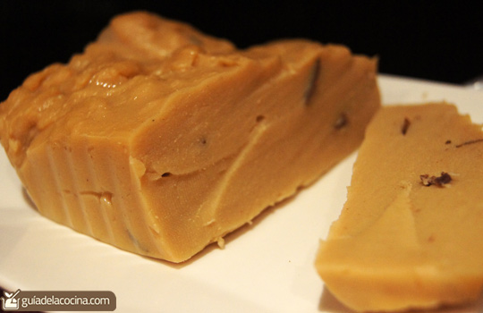

Natilla de Diego

Una deliciosa natilla para tiempos navidenos
Ingredientes
- Caja de natilla
- Bolsa de leche
Instrucciones
A decir verdad son las mismas intrucciones que trae la caja de la natilla
- En un recipiente agregue el contenido de la natilla y 1 pocillo de leche. Se recomienda hacerlo en este orden para evitar grumos, tambien se puede agregar la leche tibia. Revolver hasta que la mezcla no tenga grumos
- En una olla caliente el resto del contendio de la bolsa de leche, yo uso una olla poco profuna pero bastante ancha
- Cuando la leche empiece a hervir, agregue el contenido mezclado previamiente
- Baje el fuego a medio o lento, revuelva y no pare de revolver porque la natilla se pega a la olla y se quema
- Luego de 5 a 10 minutos, la natilla empieza a "ebullir", parece magma hirviendo porque hace burbujas que se revientan solas
- Traspase la mezcla a una refractaria, deje enfriar, mientras eso pasa raspe la olla caliente y lama la cuchara... Tambien me puede agradecer
Inicio